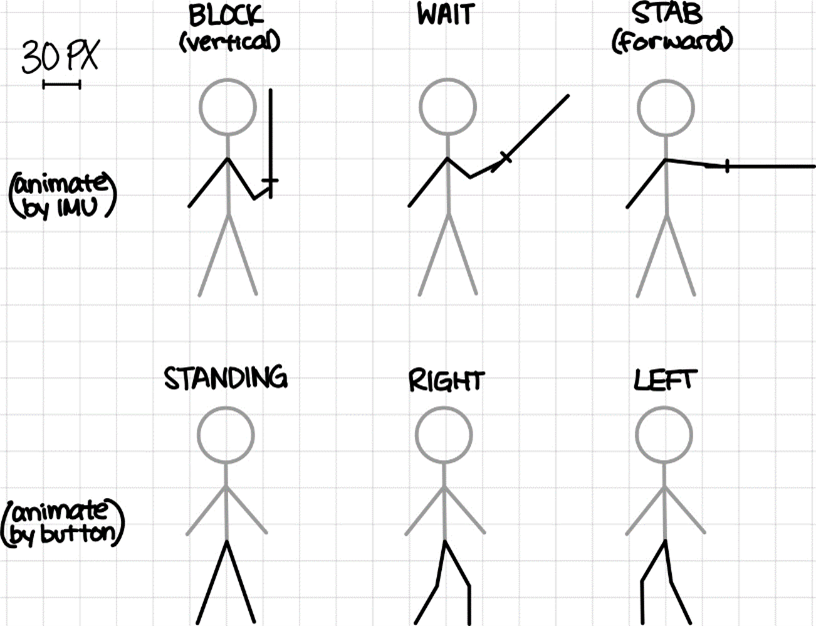

Visual Design

The visuals of this game include two stickman players, their corresponding health bars, and text screens. Colors were chosen based on contrast; specifically, we chose yellow and cyan for the different players because the combination looked like electricity, which we liked.
Stickman
The stickmen are drawn on the vga using a circle for the head and a series of lines for the body and sword. They were initially designed on grid paper, with each box measuring 30 pixels, to map out the coordinates of each line. Each player is anchored by the x- and y-coordinate at the intersection of the arms and body. By setting this intersection point as (0,0) on the mockups, all the other points can be added or subtracted from the player’s x and y position to animate any stance at any position on the screen in relation to this anchor point. The stick figures are broken into three separate parts: (1) constant features – the head and body, (2) arms and sword, and (3) legs.
The arms and sword move based on the IMU’s orientation. When the IMU is held vertically, the sword mimics the position so that the player is in block mode. When the IMU is held horizontally and moves forward (a stabbing motion), the player enters stab mode and points the sword forward. Otherwise, the stickman remains in wait mode, with the sword halfway between vertical and horizontal. In addition, the sword is dependent on the direction the player is facing, meaning that the last movement left shows the sword to the left and the last movement right shows the sword to the right. Although the arm and sword designs were created for the right hand, the x-coordinate can be simply negated to reflect this drawing. With this, the vga can animate each player based on their “sword” (IMU) movement and orientation.
The legs move based on the right and left button presses. The stickmen are initialized facing each other, but once the game begins, the legs face the direction of the most recent movement. The initial stick figure design had a standing mode for a player that was not in motion. However, upon testing, we realized that the legs would flicker between a right/left mode and the standing mode because of the frequency of animation updates and the fast change in button states. So, we ended up only using the right and left modes for more stable leg movement.<\p>
Health bar
The health bar is a series of rectangles to dynamically display each player’s health throughout the game. It is initialized as a filled rectangle with a larger rectangle outline around it. The rectangle update area is 200 pixels wide, which equates to 2 pixels per health decrease. Therefore, animating the health bar requires erasing a small two-pixel-wide rectangle starting on the right end of the bar.
On-Screen Text
The position and size of text for the title and instructions were adjusted by eye.